<!DOCTYPE html>
<html lang="en">
<head>
<meta charset="UTF-8">
<meta name="viewport" content="width=device-width,initial-scale=1">
<title>2.6 Visualising linear relationships — Introduction to Linear Polynomials</title>
<meta name="description" content="Class 9 Mathematics · Introduction to Linear Polynomials · 2.6 Visualising linear relationships">
<link rel="icon" href="data:image/svg+xml,<svg xmlns='http://www.w3.org/2000/svg' viewBox='0 0 100 100'><text y='.9em' font-size='90'>📘</text></svg>">
<link rel="stylesheet" href="../../../assets/book.css">
<link rel="stylesheet" href="https://cdn.jsdelivr.net/npm/katex@0.16.11/dist/katex.min.css" crossorigin="anonymous">
</head>
<body>
<header class="topbar">
<div class="topbar-in">
  <div class="crumb">
    <span class="c1"><a href="../../../index.html">Library</a> · <a href="../../index.html">Class 9 Mathematics</a></span>
    <span class="c2">Introduction to Linear Polynomials · 2.6 Visualising linear relationships</span>
  </div>
  <a class="tb-btn" data-nav="prev" href="../../02-introduction-to-linear-polynomials/10-exercise-2.5/index.html" title="Exercise 2.5">←</a>
  <details class="drawer"><summary class="tb-btn" title="Sections in this chapter">☰</summary>
<div class="drawer-panel"><div class="dh">Introduction to Linear Polynomials</div><a href="../01-introduction-2.1/index.html">2.1 Introduction</a><a href="../02-exercise-2.1/index.html">Exercise 2.1</a><a href="../03-linear-polynomials-2.2/index.html">2.2 Linear Polynomials</a><a href="../04-exercise-2.2/index.html">Exercise 2.2</a><a href="../05-exploring-linear-patterns-2.3/index.html">2.3 Exploring linear patterns</a><a href="../06-exercise-2.3/index.html">Exercise 2.3</a><a href="../07-linear-growth-and-linear-decay-2.4/index.html">2.4 Linear growth and linear decay</a><a href="../08-exercise-2.4/index.html">Exercise 2.4</a><a href="../09-linear-relationships-2.5/index.html">2.5 Linear Relationships</a><a href="../10-exercise-2.5/index.html">Exercise 2.5</a><a href="../11-visualising-linear-relationships-2.6/index.html" aria-current="page">2.6 Visualising linear relationships</a><a href="../12-exercise-2.6/index.html">Exercise 2.6</a></div></details>
  <a class="tb-btn" data-nav="next" href="../../02-introduction-to-linear-polynomials/12-exercise-2.6/index.html" title="Exercise 2.6">→</a>
  <button class="tb-btn" data-theme-toggle title="Toggle light / dark" aria-label="Toggle light or dark theme">◐</button>
</div>
<div class="progress"><span style="width:18.7%"></span></div>
</header>
<main class="wrap">
<div class="sec-head">
  <p class="eyebrow"><a href="../index.html">Chapter 2 · Introduction to Linear Polynomials</a></p>
  <h1>2.6 Visualising linear relationships</h1>
  <p class="sec-meta">Textbook pages 12–21 · 18 figures</p>
</div>
<article class="prose">
<p>As we have seen in many examples in this chapter, a linear pattern or relationship can be expressed in the form of an equation \(y =\) ax \(+ b\). Now we shall learn to plot such an equation as a straight line. To plot a linear equation, we need to identify any two points on the line. For example, to plot \(y = 2x + 1\), we may identify two points as follows:</p>
<p>When \(x = 0\), \(y = 1\), so (0, 1) is a point on the line. We can call this point A. We say that the x-coordinate of A is 0 and the y-coordinate is 1. Also, when \(x = 3\), \(y = 7\). Thus, B (3, 7) is another point on the line. We plot these points on the coordinate plane, join them and extend the line in both directions as shown in Fig. 2.5.</p>
<figure class="fig table-fig">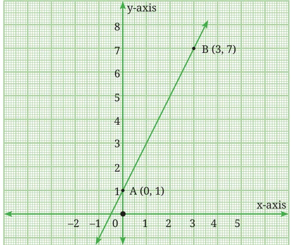<figcaption>Fig. 2.5: The straight line y = 2x + 1</figcaption></figure>
<figure class="fig wide">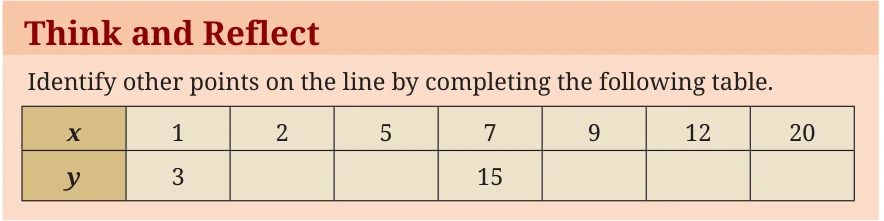</figure>
<p>Note that (1, 3) and (7, 15) are also the points on the line \(y = 2x + 1\). Plot the points on the line. You may use a graph paper for this task. Observe that if a point lies on a line, its coordinates must satisfy the equation of the line. Thus, we can verify that (7, 15) lies on the line \(y = 2x + 1\) by ­substituting \(x = 7\) and \(y = 15\) in the equation. Example 12: Let us plot the points ( \(- 1\), \(- 3)\), (0, 0), (1, 3), (3, 9), (4, 12) in the coordinate plane on a graph paper as shown in Fig. 2.6. Join the points ( \(- 1\), \(- 3)\) and (4, 12) using a ruler. Doing so, observe that all five points lie on a straight line. Can you guess the equation of this line by looking at the relationship between the x and y coordinates of each point?</p>
<figure class="fig table-fig wide">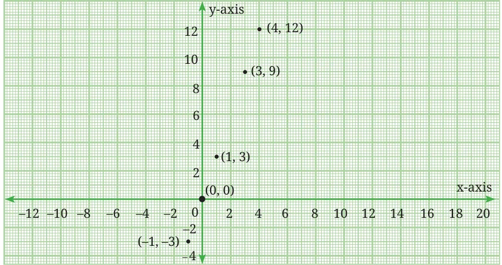<figcaption>Fig. 2.6</figcaption></figure>
<p>For each point, the value of the y-coordinate is three times that of the x-coordinate. We can therefore say that \(y = 3x\). Example 13: Let us plot the points ( \(- 3\), 6), ( \(- 2\), 4), (0, 0), (1, \(- 2)\), (2, \(- 4)\), (3, \(- 6)\) in the coordinate plane on a graph paper as shown in Fig. 2.7. Join the points ( \(- 3\), 6) and (3, \(- 6)\) using a ruler. Doing so, observe that all five points lie on a straight line. Can you guess the equation of this line by looking at the relationship between the x and y coordinates of each point?</p>
<figure class="fig table-fig wide">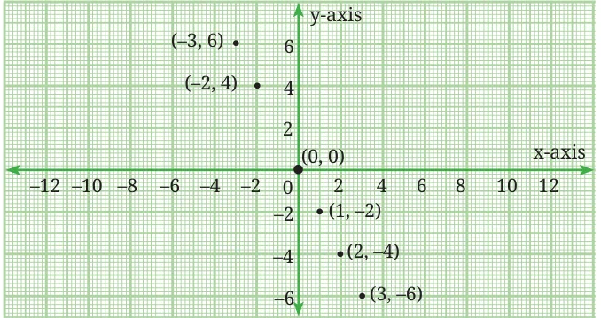<figcaption>Fig. 2.7</figcaption></figure>
<p>Example 14: Draw the graphs of \(y = \frac{1}{2} x\), \(y = x\), \(y = 2x\) by selecting ­suitable points on these lines. (Hint: In order to graph \(y = \frac{1}{2} x\), we could take the points (0, 0) and (4, 2). Can you verify that these lie on the line?)</p>
<p class="caption">Fig. 2.8 shows the graphs of these linear equations without any points labelled.</p>
<figure class="fig table-fig wide">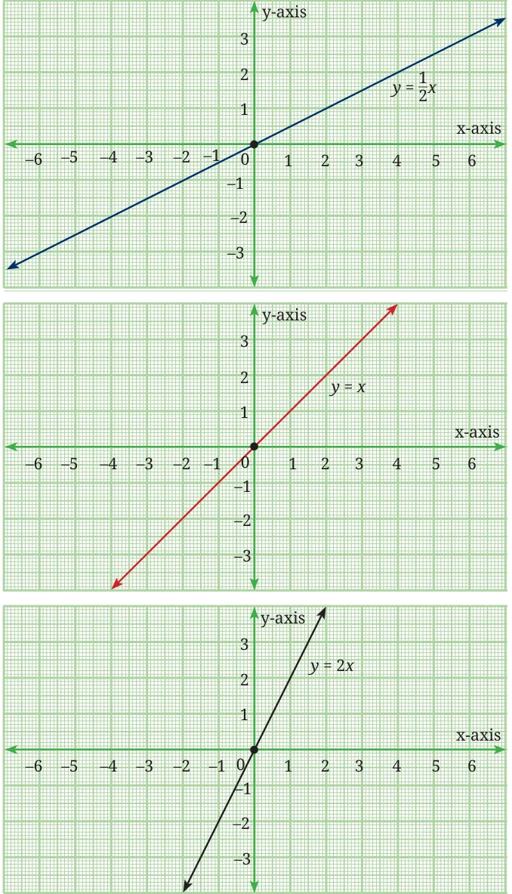<figcaption>Fig. 2.8</figcaption></figure>
<p>Fig. 2.9 shows all the three graphs on the same axes. Does this help you to conclude anything about the linear equation \(y =\) ax, \(a &gt; 0\) as a varies? What happens when \(a &gt; 1\) and when \(a &lt; 1\)? (Hint: You may also plot the equations \(y = 3x\) and \(y = \frac{1}{3}\) on the same axes.)</p>
<figure class="fig table-fig wide">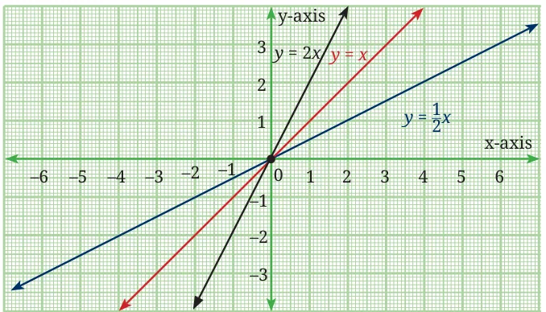<figcaption>Fig. 2.9</figcaption></figure>
<p>First of all, we observe that the straight lines representing an equation of the form \(y =\) ax, always pass through the origin (0, 0). Further, when \(a &gt; 1\), the line is steeper than the line \(y = x\), which is equally inclined to both axes. However, when \(a &lt; 1\), the line is less steep than the line \(y = x\). In fact, a is referred to as the slope of the line \(y =\) ax. We will learn more about the concept of the slope of a line in the chapter on linear ­equations. For now, we focus on another important observation. A linear growth is represented by a straight line with positive slope while a linear decay is represented by a straight line with negative slope. Note that the number of square tiles in the pattern in Fig. 2.4 leads to the sequence 1, 3, 5, 7, …. in which the difference of consecutive terms is the constant 2. The slope of the line representing the linear relationship between the term number and the number of square tiles is \(y = 2x - 1\) is 2. Hence, the slope represents the constant difference between consecutive terms of the sequence. Example 15: Now let us draw the graphs of \(y = \frac{ - 1}{3} x\), \(y = - x\), \(y = - 3x\) by selecting suitable points on these lines. Fig. 2.10 shows the graphs of these linear equations without any points labelled on them.</p>
<figure class="fig table-fig wide">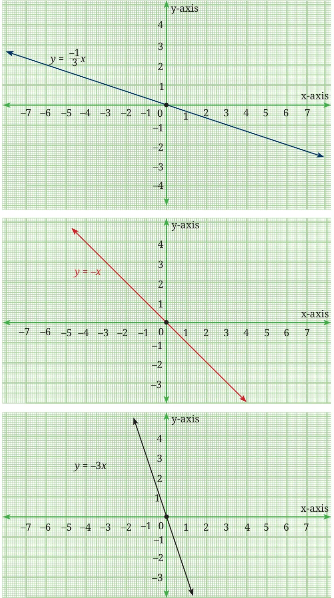<figcaption>Fig. 2.10</figcaption></figure>
<p>Fig. 2.11 shows all the three graphs on the same axes. Does this help you to conclude anything about the linear equation \(y = -\) ax, \(a &gt; 0\), as a varies? What will happen when \(a &gt; 1\) and when \(a &lt; 1\)?</p>
<figure class="fig table-fig wide">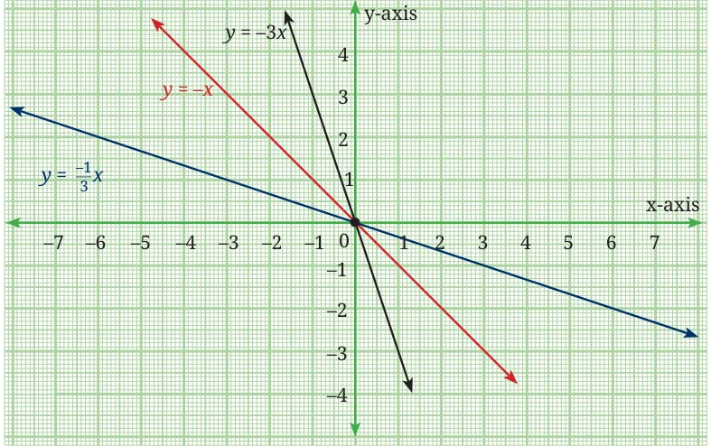<figcaption>Fig. 2.11</figcaption></figure>
<figure class="fig wide">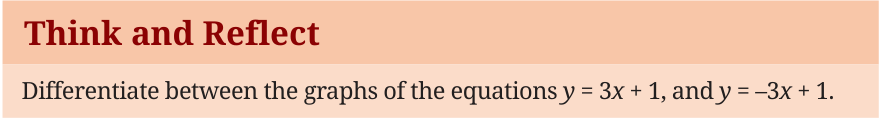</figure>
<p>Example 16: Let us now draw the graphs of \(y = 2x - 1\), \(y = 2x + 1\), \(y = 2x + 5\), first individually (as shown in Fig. 2.12) and then on the same axes (as shown in Fig. 2.13).</p>
<figure class="fig table-fig wide">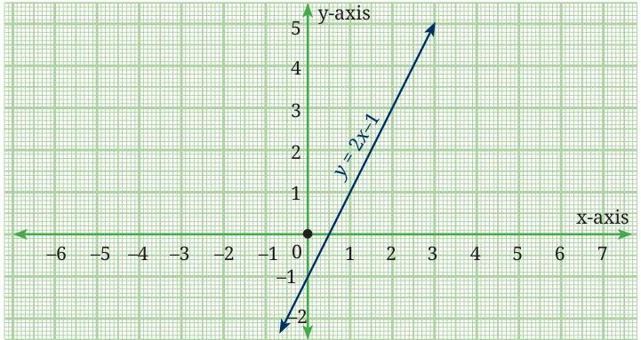<figcaption>Fig. 2.12 A</figcaption></figure>
<figure class="fig table-fig wide">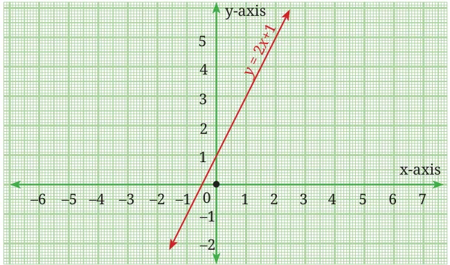<figcaption>Fig. 2.12 B</figcaption></figure>
<figure class="fig table-fig wide">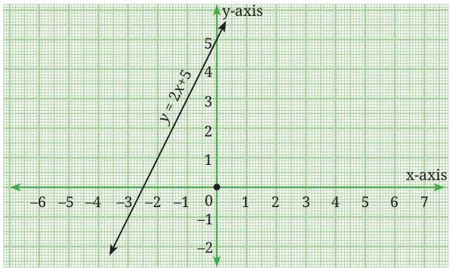<figcaption>Fig. 2.12 C</figcaption></figure>
<figure class="fig table-fig wide">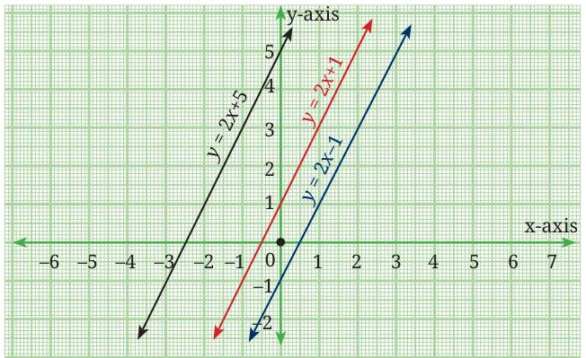<figcaption>Fig. 2.13</figcaption></figure>
<figure class="fig wide">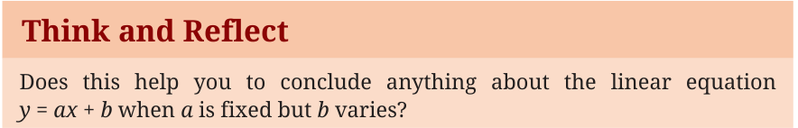</figure>
<p>(Hint: In these equations \(a = 2\), and b takes the values \(- 1\), 1 and 5, ­respectively.) Now let us draw the graphs of the equations \(y = x + 3\), \(y = 2x + 5\) and \(y = 3x - 2\). See Fig. 2.14 and observe where these lines cut the y-axis.</p>
<figure class="fig table-fig">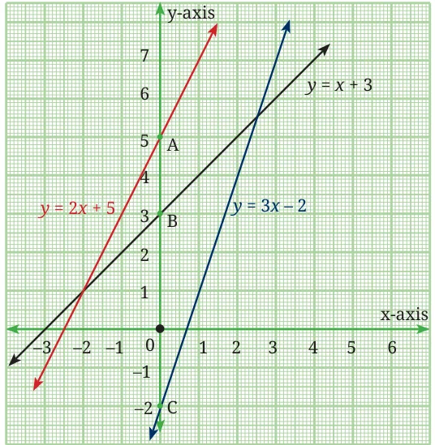<figcaption>Fig. 2.14</figcaption></figure>
<p>We see that, \(y = 2x + 5\) cuts the y-axis at A (0, 5), \(y = x + 3\) cuts the y-axis at B (0, 3), and \(y = 3x - 2\) cuts the y-axis at C (0, \(- 2)\). We observe that any straight line written in the form \(y =\) ax \(+ b\) cuts the y-axis at the point (0, b). The length b is referred to as the y-intercept of the line. Thus, the y-intercept of the line \(y = x + 3\) is 3. This means that the line cuts the y-axis at a distance of 3 units from the origin in the positive direction. Similarly, the y-intercept of the line \(y = 3x - 2\) is \(- 2\).</p>
<p>This means that the line cuts the y-axis at a distance of 2 units from the origin in the negative direction. After observing the graphs in Figures 2.8 to 2.14, we may conclude the following:</p>
<ul class="qlist">
<li><span class="mk">(i)</span><span class="lt">In the equation \(y =\) ax \(+ b\), a represents the slope of the line</span></li>
</ul>
<p>and b represents the y-intercept.</p>
<ul class="qlist">
<li><span class="mk">(ii)</span><span class="lt">If we change the values of a, keeping b fixed, the slope of the</span></li>
</ul>
<p>line changes while the y-intercept remains fixed.</p>
<ul class="qlist">
<li><span class="mk">(iii)</span><span class="lt">If we change the values of b keeping the value of a fixed, the</span></li>
</ul>
<p>lines shift but remain parallel to the original line. Thus, lines with equal slopes but different y-intercepts are parallel to each other.</p>
<figure class="fig"></figure>
<ul class="qlist">
<li><span class="mk">1.</span><span class="lt">Draw the graphs of the following sets of lines. In each case, reflect</span></li>
</ul>
<p>on the role of ‘a’ and ‘b’.</p>
<ul class="qlist">
<li><span class="mk">(i)</span><span class="lt">\(y = 4x\), \(y = 2x\), \(y = x\)</span></li>
<li><span class="mk">(ii)</span><span class="lt">\(y = - 6x\), \(y = - 3x\), \(y = - x\)</span></li>
<li><span class="mk">(iii)</span><span class="lt">\(y = 5x\), \(y = - 5x\)</span></li>
<li><span class="mk">(iv)</span><span class="lt">\(y = 3x - 1\), \(y = 3x\), \(y = 3x + 1\)</span></li>
<li><span class="mk">(v)</span><span class="lt">\(y = - 2x - 3\), \(y = - 2x\), \(y = 2x + 3\)</span></li>
</ul>
<figure class="fig"></figure>
<ul class="qlist">
<li><span class="mk">1.</span><span class="lt">Write a polynomial of degree 3 in the variable x, in which the</span></li>
</ul>
<p>coefficient of the x term is \(- 7\).</p>
<ul class="qlist">
<li><span class="mk">2.</span><span class="lt">Find the values of the following polynomials at the indicated</span></li>
</ul>
<p>values of the variables.</p>
<ul class="qlist">
<li><span class="mk">(i)</span><span class="lt">\(5x - 3x + 7\) if \(x = 1\)</span></li>
</ul>
<ul class="qlist">
<li><span class="mk">(ii)</span><span class="lt">\(4t - t + 6\) if \(t = a\)</span></li>
</ul>
</article>
<nav class="pager"><a class="" data-nav="prev" href="../../02-introduction-to-linear-polynomials/10-exercise-2.5/index.html"><span class="dir">← Previous</span><span class="t">Exercise 2.5</span><span class="ch">Introduction to Linear Polynomials</span></a><a class="nx" data-nav="next" href="../../02-introduction-to-linear-polynomials/12-exercise-2.6/index.html"><span class="dir">Next →</span><span class="t">Exercise 2.6</span><span class="ch">Introduction to Linear Polynomials</span></a></nav>
</main><footer class="site">Generated from the source textbook PDFs · text, figures and exercises belong to their respective publishers.</footer><script defer src="https://cdn.jsdelivr.net/npm/katex@0.16.11/dist/katex.min.js" crossorigin="anonymous"></script>
<script defer src="https://cdn.jsdelivr.net/npm/katex@0.16.11/dist/contrib/auto-render.min.js" crossorigin="anonymous"
  onload="renderMathInElement(document.body,{delimiters:[
    {left:'\\(',right:'\\)',display:false},
    {left:'$$',right:'$$',display:true},
    {left:'\\[',right:'\\]',display:true}],throwOnError:false,ignoredTags:['script','noscript','style','textarea','pre','code']})"></script>
<script src="../../../assets/book.js"></script>
<script defer src="../../../../assets/search.js"></script>
<script defer src="../../../../assets/screenshot.js"></script>
</body>
</html>
